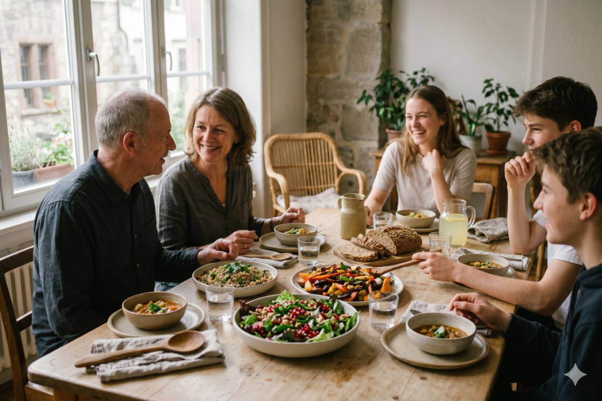

Linderung von Reflux und Sodbrennen
Diese warme, aufsteigende Verbrennung hinter dem Brustbein nach einer guten Mahlzeit. Der saure Geschmack an der Rückseite der Kehle, wenn du dich hinlegst. Ein Husten, der sich nicht ganz erklären lässt. Reflux ist eine der häufigsten Beschwerden, mit denen Menschen ruhig leben — oft jahrelang — unter der Annahme, dass es einfach Teil der Funktionsweise ihres Körpers ist. Manchmal ist es etwas, das man akzeptieren kann, aber sehr oft gibt es Raum, sich wesentlich besser zu fühlen.
was eigentlich gerade passiert.
Zwischen Ihrer Speiseröhre (der Röhre, die Nahrung nach unten transportiert) und Ihrem Magen sitzt ein Muskelring, der als unterer Ösophagusschließmuskel bezeichnet wird. Seine Aufgabe ist einfach: öffnen, um Nahrung hereinzulassen, dann schließen, um den Mageninhalt dort aufzubewahren, wo er hingehört. Reflux tritt auf, wenn sich dieser Ring im falschen Moment entspannt, so dass saurer Mageninhalt wieder nach oben wandern kann. Die Magenschleimhaut ist für den Umgang mit Säure ausgelegt; die Speiseröhre nicht. Dieses Missverhältnis ist das, was Sie als Sodbrennen empfinden.
Gelegentlicher Reflux ist normal und harmlos. Wenn es häufig oder hartnäckig wird, wird es normalerweise GERD (gastroösophageale Refluxkrankheit) genannt — und das ist es wert, darauf zu achten.
Problem
Die Ursachen sind selten einzeln. Häufige Mitwirkende sind große oder überstürzte Mahlzeiten, zu frühes Liegen nach dem Essen, zusätzliches Gewicht in der Mitte, bestimmte Lebensmittel (fettige oder frittierte Mahlzeiten, Kaffee, Alkohol, Schokolade, Minze, sehr würzige Gerichte), Rauchen, einige Medikamente und eine Hiatushernie, bei der ein Teil des Magens durch das Zwerchfell nach oben drückt. Und — in Kürze mehr dazu — Stress spielt eine größere Rolle, als die meisten Menschen erkennen.
Zwei Gesichter desselben Feuers
Hier ist ein Unterschied, der viele Menschen überrascht. Sodbrennen fühlt sich wie zu viel Säure an, und für viele ist es genau das, was es ist. Aber nicht immer.
Im Bild mit hoher Säure produziert der Magen viel Säure, und das Problem ist mechanisch: Der Schließmuskel hält nicht, so dass Säure nach oben entweicht. Dies ist die Version, für die die meisten Antazida und säureblockierenden Medikamente entwickelt wurden, und für viele Menschen bringen sie echte Erleichterung.
Im Niedrigsäurebild geht es um zu wenig Magensäure. Es wird angenommen, dass Nahrung ohne genügend Säure sitzt und fermentiert, anstatt weiterzumachen, wodurch Druck aufgebaut wird, der den Inhalt nach oben drückt, während der Schließmuskel nicht das starke saure Signal erhält, das er benötigt, um sich fest zu schließen. Menschen in dieser Gruppe bemerken manchmal Blähungen, Fülle und das Gefühl, dass Mahlzeiten "einfach da sitzen".
Warum ist die Unterscheidung wichtig? Denn die beiden können gegensätzliche Ansätze verlangen, und was das eine beruhigt, kann das andere verschlimmern. Die ehrliche Antwort ist, dass es nicht immer einfach ist, sie auseinander zu halten, und die Selbstdiagnose hat Grenzen. Wenn Reflux ein fester Bestandteil Ihres Lebens ist, lohnt es sich wirklich, dies mit einem Arzt oder einem qualifizierten Arzt zu erkunden, anstatt zu raten.
Die Stressverbindung — und Ihr Vagusnerv
Wenn Sie jemals bemerkt haben, dass sich Ihr Magen während einer stressigen Woche gestrafft hat, haben Sie die Verbindung bereits gespürt. Die Verdauung erfolgt weitgehend über das parasympathische Nervensystem — den „Ruhe- und Verdauungsmodus“. Stress versetzt Sie in "Kampf oder Flucht", und die Verdauung ist eines der ersten Dinge, denen der Körper den Vorrang nimmt, wenn er denkt, dass Sie in Gefahr sind.
Im Zentrum davon sitzt der Vagusnerv, der lange wandernde Nerv, der Gehirn und Darm verbindet. Es hilft, den Tonus des Ösophagussphinkters einzustellen, regelt den Rhythmus der Magenbewegung und beeinflusst die Säuresekretion. Wenn die vagale Aktivität gesund und stabil ist, neigt das Verdauungssystem dazu, reibungslos zu funktionieren. Wenn Sie chronisch gestresst sind, wird diese Signalisierung unregelmäßig — die Motilität verlangsamt sich, der Schließmuskel verhält sich weniger zuverlässig und der Reflux findet eine Öffnung.
Dies ist in gewisser Weise eine ermutigende Nachricht: Es bedeutet, dass es bei Reflux nicht nur darum geht, was Sie essen, sondern auch um den Zustand, in dem Sie sich befinden, wenn Sie es essen. Und der Zustand Ihres Nervensystems ist etwas, das Sie beeinflussen können.
Essgewohnheiten, die helfen
Kleine Veränderungen in der Art und Weise, wie Sie essen, sind oft genauso wichtig wie das, was auf dem Teller ist:
Essen Sie kleinere Mahlzeiten. Ein voller Magen übt Druck auf den Schließmuskel aus. Kleinere, häufigere Mahlzeiten verlangen weniger davon.
Essen Sie nicht direkt vor dem Schlafengehen. Das Hinlegen entfernt die Hilfe der Schwerkraft. Ziel ist es, etwa drei Stunden vor dem Liegen mit dem Essen fertig zu sein, damit dein Magen Zeit hat, sich zu leeren.
Langsam. Schnell essen bedeutet, Luft zu schlucken und zu wenig zu kauen, was den Druck erhöht und die Verdauung erschwert. Ein paar ruhige Minuten vor dem ersten Bissen — sogar drei langsame Atemzüge — versetzen Sie in diesen "Ruhe- und Verdauungszustand".
Schaffen Sie Freude rund um Ihren Esstisch. Eine Mahlzeit, die schmackhaft ist, schön serviert und ohne Eile gegessen wird, reduziert den Stress, verlangsamt den Prozess und ermöglicht eine achtsame Umgebung rund um Essen und Essen. Was könnte daran falsch sein?
Beachten Sie Ihre Auslöser. Kaffee, Alkohol, große fetthaltige Mahlzeiten und sehr würzige oder säurehaltige Lebensmittel sind häufige Schuldige, aber die Liste aller ist persönlich. Ein kurzes Ernährungstagebuch deckt Muster oft schneller auf als Vermutungen.
Heben Sie den Kopf des Bettes leicht an, wenn nächtlicher Reflux ein Problem ist — ein Keil unter der Matratze funktioniert besser als das Stapeln von Kissen.
Ein Wort zu Nahrungsergänzungsmitteln
Diese können den Komfort unterstützen, sind aber kein Ersatz für das zugrunde liegende Bild — und einige interagieren mit Medikamenten oder Erkrankungen. Daher lohnt es sich, zuerst mit einem Arzt zu sprechen, insbesondere wenn Sie bereits säurereduzierende Medikamente einnehmen.
idgl (deglycyrrhiziniertes Lakritz) ist ein traditionelles beruhigendes Mittel für die Verdauungsschleimhaut, bei dem die blutdruckerhöhende Verbindung entfernt wurde.
Rutschige Ulme und Marshmallowwurzel bilden eine sanfte, schützende Beschichtung, die viele bei einer gereizten Kehle und Speiseröhre beruhigend finden.
Melatonin ist am besten für den Schlaf bekannt, aber es gibt interessante Beweise dafür, dass es auch zum Schutz der Speiseröhrenschleimhaut beiträgt.
Magnesium unterstützt die Muskelfunktion und Entspannung und ist für die meisten Menschen sanft.
Atmen Sie Ihren Weg zu einem ruhigeren Darm
Hier trifft etwas wirklich Einfaches auf etwas Wirkungsvolles. Das Zwerchfell — Ihr Hauptatemmuskel — umschließt auch die Speiseröhre und wirkt als natürliche Unterstützung für diesen Schließmuskel. Die langsame, tiefe Bauchatmung bewirkt zwei Dinge gleichzeitig: Sie stärkt die Zwerchfellunterstützung und stimuliert den Vagusnerv, wodurch Sie in den Verdauungsmodus versetzt werden.
Eine Übung zum Ausprobieren, idealerweise vor den Mahlzeiten und erneut vor dem Schlafengehen:
Sitze oder lege dich bequem mit einer Hand auf deinen Bauch.
Atme etwa viermal langsam durch die Nase ein und lasse den Bauch aufsteigen — nicht die Brust.
Atme etwa sechs Mal sanft aus, länger als beim Einatmen. Am stärksten greift der Vagusnerv durch das verlängerte Ausatmen an.
Fahren Sie fünf bis zehn Minuten fort.
Regelmäßig durchgeführt, ist die Zwerchfellatmung eine der wenigen Refluxstrategien, die sowohl die Forschung unterstützen als auch keinen Nachteil haben. Es ist auch der Faden, der viel von dem verbindet, was wir in unserer Bewegung und Qigong-Arbeit erforschen, wo Atem und ein beruhigtes Nervensystem der Ausgangspunkt für den Körper sind, der gut arbeitet.
Wann man einen Arzt aufsuchen sollte
Reflux ist in der Regel ein Komfortproblem, aber einige Anzeichen verdienen sofortige medizinische Hilfe: Schwierigkeiten oder Schmerzen beim Schlucken, unerklärlicher Gewichtsverlust, Erbrechen, schwarzer oder blutiger Stuhl oder Symptome, die trotz Veränderungen und rezeptfreien Mitteln bestehen bleiben. Und weil Brustbeschwerden gelegentlich etwas mit dem Herzen und nicht mit dem Magen zu tun haben können, sollte alles Intensive, Unbekannte oder Begleiterscheinungen von Atemnot oder Arm- oder Kieferschmerzen unverzüglich überprüft werden.
Das größerer Ganze
Reflux sitzt direkt am Treffpunkt von Körper und Geist — Ernährung, Haltung und der Zustand Ihres Nervensystems laufen in diesem einen brennenden Gefühl zusammen. Kleine, konsistente Anpassungen an die Art und Weise, wie Sie essen, wie Sie atmen und wie Sie Stress tragen, können die Dinge sinnvoll verändern. Die Beruhigung des Systems, das die Verdauung steuert, ist genau die Art von Ganzkörperarbeit — durch Atem, Bewegung und die Lockerung des Stresses auf den Körper —, die im Mittelpunkt dessen steht, was wir tun.
Wenn Reflux ein regelmäßiger Begleiter ist und Sie sich die Stress- und Nervensystemseite ansehen möchten, können Sie sich gerne mit uns in Verbindung setzen.
Newsletter abonnieren
Erhalten Sie wertvolle Einblicke in Gesundheit, Wohlbefinden und Atemübungen direkt in Ihr Postfach.